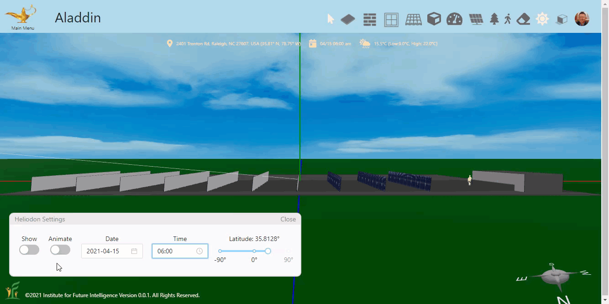
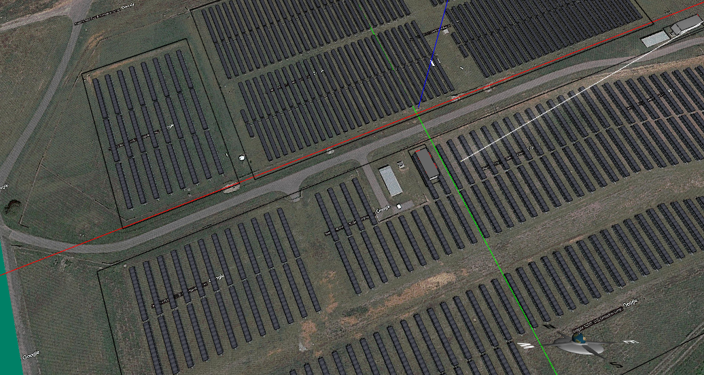
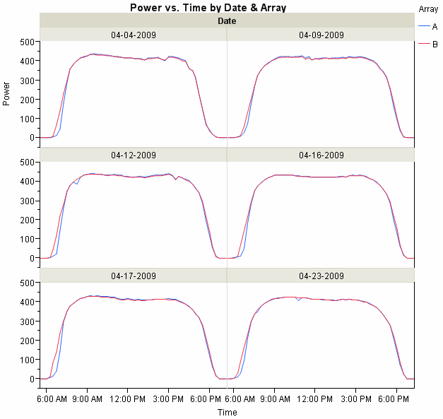
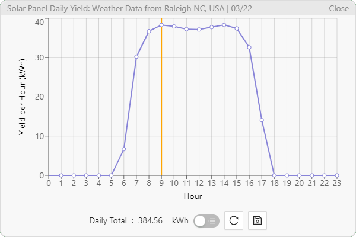
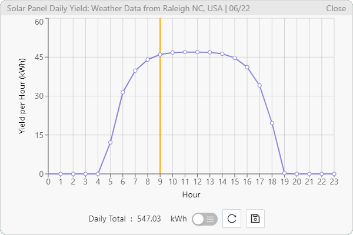
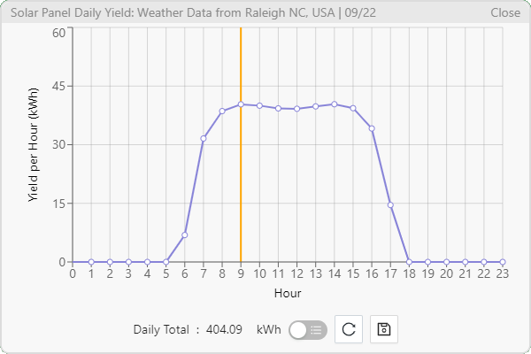
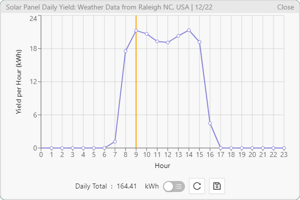
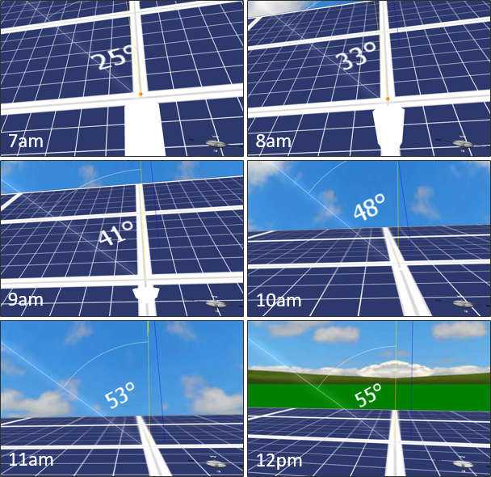
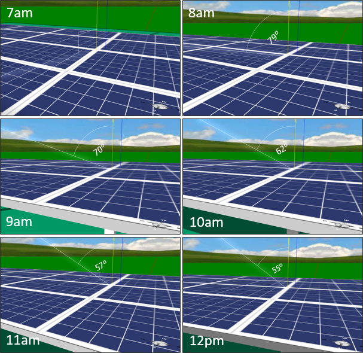

Deciphering a Solar Array Surprise with Aladdin
By Charles Xie ✉
Listen to a podcast about this article
SAS, a software company based in Cary, North Carolina, is powered by a solar farm consisting of solar panel arrays driven by horizontal single-axis trackers (HSAT) with the axis fixed in the north-south direction and the panels rotating from east to west to follow the sun during the day, as shown in Figure 1 below.

Figure 1. Horizontal single-axis trackers.
Figure 2 shows an Aladdin model of the solar farm near SAS in North Carolina.

Figure 2. An Aladdin model of the SAS solar farm.
Xan Gregg, Director of Research and Development at SAS, posted some production data from the solar farm that seem so counter-intuitive that he called it a “solar array surprise” (which happens to also acronym to SAS, by the way). The data are puzzling because they show that the outputs of solar panels driven by HSAT actually dip a bit at noon when the intensity of solar radiation reaches the highest of the day, as shown in Figure 3. The dip is much more pronounced in the winter than in the summer, according to Mr. Gregg (he only posted the data for April, though, which shows a mostly flat top with a small dip in the production curve).

Figure 3. Daily data of electricity generation (Credit: Xan Gregg)
Results from Aladdin simulations
With our cloud-based Aladdin software, anyone can easily confirm this effect with a simulation of HSAT-driven solar panel arrays in a Web browser. Figure 4 shows the results predicted by Aladdin for 3/22, 6/22, 9/22, and 12/22, which reveal a small dip in the spring and fall, a significant dip in the winter, and no dip at all in the summer.




Figure 4. Aladdin simulation results for four seasons (partial results, not for the whole field).
It is great that our simulation results agree with the actual production data, at least qualitatively. But how do we make sense of the results? While numeric simulations are very powerful tools, they are somehow "black boxes" — they do not automatically offer an explanation that humans can readily understand. So we need to analyze the case more deeply to understand why. Fortunately, our Aladdin software provides several built-in visualization tools for this purpose (because our utlimate goal is to develop Aladdin into an innovative CAD system powered by explained artificial intelligence, or XAI).
Look at the angle
One of the most important factors that affect the output of solar panels, regardless of whether or not they turn to follow the sun, is the angle of incidence of sunlight (the angle between the direction of the incident solar rays and the normal vector of the solar panel surface). The smaller this angle is, the more energy the solar panel receives (if everything else is the same). If we track the change of the angle of incidence over time for a solar panel rotated by HSAT on January 22 (with Aladdin we can easily do that!), we can see that the angle is actually the smallest in early morning and gradually increases to the maximum at noon (Figure 5).

Figure 5. The change of the incident sunbeam angle over time on 1/22 (HSAT).
This trend is opposite to the pattern of change for the angle of incidence on a horizontally-fixed solar panel, which shows that the angle is the largest in early morning and gradually decreases to the minimum at noon (Figure 6) — though the incidence angle at noon is not smaller than the corresponding angle in Figure 5. The trend shown in Figure 6 is exactly the reason why we feel the solar radiation is the most intensive at noon.

Figure 6. The change of the incident sunbeam angle over time on 1/22 (for fixed solar panels).
Click HERE to view and play with the Aladdin model
The effect of air mass
It is good that we sort out the angle problem, but we still have a question: If the incident angle of sunlight is the smallest at 7 am in the morning of January 22, as shown in Figure 5, why is the output of the solar panels at 7 am less than that at 9 am, as shown in Figure 4?
This phenomenon has to do with something called air mass, a jargon used in solar engineering to represent the distance that sunlight has to travel through the Earth’s atmosphere before it reaches a solar panel as a ratio relative to the distance when the Sun is exactly vertically upwards (i.e., at the zenith). The larger the air mass is, the longer the distance sunlight has to travel and the more it is absorbed or scattered by air molecules. The air mass coefficient is approximately inversely proportional to the cosine of the zenith angle, meaning that it is the largest when the Sun just rises from the horizon (0°) and the smallest when the Sun is at the zenith (90°). Because of the effect of air mass, the energy received by a solar panel will not be the highest at dawn. The exact time of the output peak depends on the proportional contributions from the incidental angle and the air mass.
Conclusion
We can conclude that it is largely the rotation of the solar panels driven by HSAT that is responsible for this “surprise.” The constraint of the north-south alignment of the solar panel arrays makes it more difficult for them to face the Sun, which appears to be shining more from the south at noon in the winter. If you want to investigate this effect further, you can try to track the changes of the incident angle in different seasons.
Lastly, this dip effect becomes less significant if we move closer to the equator. With Aladdin, you can confirm that the effect nearly vanishes in Singapore, which has a latitude of one degree. The lesson learned from this study is that the return on investment in HSAT is better at lower latitudes than at higher latitudes. This is probably why we see solar panel arrays in the north are typically fixed and tilted to face the south.